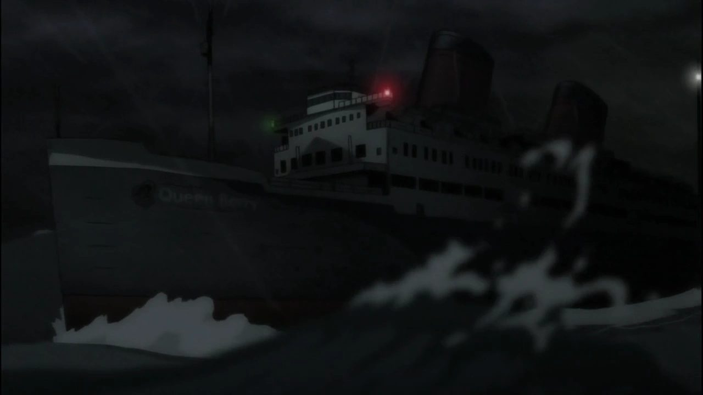

Reem's Media Tree
Greetings to the fine, lovely, viewer reading ✨ Follow my Socials!
Greetings to the fine, lovely, viewer reading ✨ Follow my Socials!
I enjoy playing games, building computers, and flying drones as well as gardening among other things. Im commited to the US Army and begin my term on August 31st 2026.
One of my hobbies is putting together computers, I've built a couple for myself and other so far. Heres some of the ones I made.
I'm also a amatuer drone flyer and photographer, I find it pretty fun to mess with people using my drones haha. Heres some pictures Ive taken:
I also am a amateur gardener, Ive grown very little and know very little to boot but I enjoy learning by trial and error. Here some photos of my sunflowers.
Appreciate you taking the time to check this out -Reem
Thoughts, updates, and random stuff ✨

667
76743y56ghe456rtyh

This anime takes a drastic turn from a simple mystery solving anime into a strongly emotional show with powerful themes of heritage and culture vs science and moving forward, loneliness and connection, which goes hand and hand with separation over time.
Notes: I am NOT a manga reader, I am also not a literary analysis genius
I'm writing a blurb on something I watched for documentation
If you would like to discuss this or correct me DM me on Discord
This mostly unheard-of anime was found on Crunchyroll, and I was intrigued by the one-word title which is very unlike many current anime with absolutely abysmally long titles. At first, I took this anime at face value being a simple mystery solving anime that you can follow along with, like the early on Queen Berry mystery for example.

The show involves wimpy yet determined main character names Kujo and Victorique, a sweets loving tsundere. A couple episodes in and it reveals there's a lot more to it, mostly focusing around the horrid family history Victorique has and developing strong themes of loneliness and connection as well as fantasy/belief vs science shown through the Occult faction and Science faction fighting for power in Saubureme.
This show takes a wild turn that was hard to see in the beginning to what seems to be a mix of WWII and the Russo Japanese war with a pretty crazy and emotional ending that also was very confusing for me, perhaps because I was watching it at 2 AM.
Overall, I think for me it was pretty good, it just has a pretty one-dimensional beginning. It was just hard telling which direction the anime wanted to take it felt as if someone else took over a quarter into the show and made it super good. Its not a fighting anime which lots of people are ONLY interested in that which kind of sucks cause this isn't a generic anime it does deserve more recognition than I see especially cause its not harem slop. I haven't see the continuation series and don't plan on it at the moment.
P.S. Cecile my goat
Would Marry/10